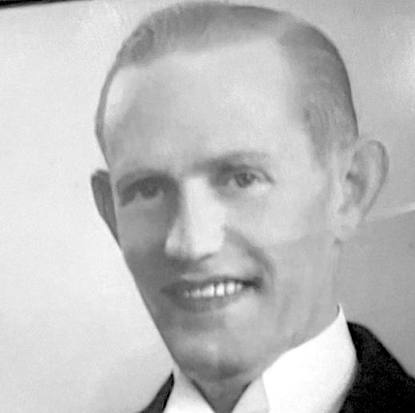

Född 18 mar 1946 i Norrköpings Borg (E) 1 .
Född 3 sep 1921 i Norrköpings Hedvig (E) 2 .
Död 9 jan 1996 på Urbergsgatan 33, Gård 2, Kv Topasen, Vilbergen, Norrköping, Norrköpings Borg (E) 3 .

FF Axel Gottfrid Karlsson.Född 26 jun 1891 i Lilla Brink, Kulla, Skönberga (E) 4 .
Död 29 jun 1970 på Albrektsvägen 108 B, Gård 10, Kv Hällristningen, Söderstaden, Norrköping, Norrköpings Sankt Olai (E) 3 .
FFF Klas Ferdinand Karlsson.

Född 19 jun 1859 i Holmtebo, Ringarum (E) 5 .
Död 31 jan 1945 i Lunds jägmästaregård, Lund, Drothem (E) 3 .
FFM Hilda Sofia Karlsdotter.
Född 2 feb 1867 i Borrdalen, Fredriksnäs, Gryt (E) 6 .
Död 28 okt 1934 i Lunds jägmästaregård, Lund, Drothem (E) 3 .
Född 23 jul 1896 i Briteberg, Stora Bräng Norrgården, Stora Bräng, Sund (E) 7 .
Död 13 jun 1929 på Slottsgatan 143, Gård 12, Kv Vinpipan, Nordantill, Norrköping, Norrköpings Matteus (E) 8 .
Född 5 mar 1925 i Stora Malm (D) 9 .
Död 11 aug 1960 på Vrinnevigatan 4 A, Gård 1, Kv Taket, Hageby, Norrköping, Norrköpings Sankt Johannes (E) 3 .
 Född
27 aug 1976
i Västerås Badelunda (U)
Född
27 aug 1976
i Västerås Badelunda (U)